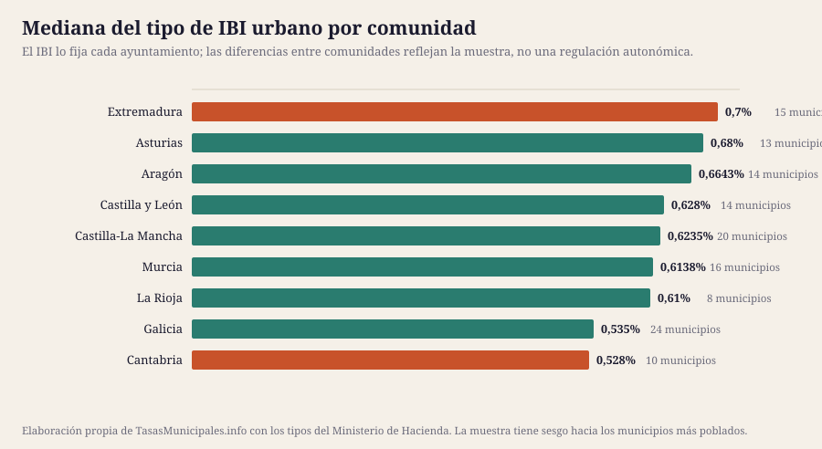

Comparativas hechas con los datos oficiales de 134 municipios normalizados en una misma tabla. Cada cifra con su fuente y cada artículo con sus límites.
Por Aithamy Rivero · Actualizado el 25 de julio de 2026 · Metodología y fuentes
Las guías explican cómo funciona cada impuesto y las fichas municipales dan el dato de un municipio concreto. Esta sección es distinta: son análisis que solo se pueden hacer teniendo los 134 municipios en la misma tabla, comparando lo que cada ayuntamiento ha aprobado.
Todas las cifras salen de fuentes oficiales citadas —la consulta de información impositiva municipal del Ministerio de Hacienda, el INE y el BOE— y cada artículo dice al final qué no cubre. Cuando un dato no está contrastado, lo decimos: así trabajamos.
La muestra sobre la que trabajan todos los análisis es la misma: 134 municipios de nueve comunidades autónomas, 7.777.568 habitantes en total, con el ejercicio 2025 como último publicado por Hacienda. En ella el tipo de IBI urbano va del 0,4% al 0,984% (mediana: 0,6065%), las valoraciones catastrales vigentes van de 1986 a 2025 y la tarifa del impuesto de circulación de un turismo medio, de 34,08 € a 68,16 € al año.
No es una muestra representativa del conjunto de España: son los municipios que hemos podido documentar por completo, con sesgo hacia los más poblados de cada provincia. Lo decimos aquí y en cada artículo, porque cambia lo que se puede concluir: sirve para comparar municipios entre sí y para ver patrones, no para calcular medias nacionales.

El IBI es un tributo estrictamente municipal: la comunidad autónoma no fija el tipo ni participa en su recaudación. Que las medianas por comunidad salgan distintas no indica ninguna política autonómica, sino la mezcla de municipios que hay en cada una y, sobre todo, la antigüedad de sus valores catastrales. La comunidad con la mediana más alta de la muestra es Extremadura (0,7% en 15 municipios) y la más baja Cantabria (0,528% en 10).
Para leer bien cualquiera de estas comparaciones hay una regla que conviene tener presente: el tipo de gravamen no es el precio del recibo. La cuota es valor catastral por tipo, y un municipio con valores de los años noventa puede aplicar un tipo alto y seguir cobrando menos que su vecino recién revisado. Por eso la sección tiene un artículo dedicado precisamente a la antigüedad de las valoraciones.
El punto de partida es la consulta de información impositiva municipal del Ministerio de Hacienda, la única fuente estatal que publica, municipio a municipio y ejercicio a ejercicio, lo que cada ayuntamiento tiene aprobado: tipos del IBI, tarifa del impuesto de circulación, tipo del ICIO, coeficientes de la plusvalía y año de la última valoración catastral. A eso sumamos las cifras oficiales de población del INE y el texto consolidado de la normativa en el BOE.
Descargamos esos datos, los normalizamos en una única tabla y a partir de ahí calculamos rankings, medianas y ejemplos comparados. Los cálculos derivados —una cuota para un valor catastral común, una diferencia en euros— se explican siempre en el apartado de metodología de cada artículo, para que se puedan reproducir.
No rellenamos huecos. Cuando la fuente no publica un dato lo decimos y contamos a cuántos municipios afecta; cuando lo que publica no encaja con la normativa vigente, lo advertimos en lugar de reproducirlo. El caso más claro es la tasa de residuos: no existe fuente estatal que la recoja, así que no publicamos importes por municipio y explicamos por qué. Y ningún análisis sustituye a la ordenanza fiscal del municipio, que es la que vale ante una liquidación: en cada ficha municipal enlazamos dónde consultarla.
Cada figura de esta sección se dibuja con los datos de la propia página, lleva el texto como texto —se puede seleccionar, buscar e indexar— y cita la fuente en el pie. No hay imágenes de archivo ni gráficos tomados de terceros. Si encuentras una diferencia entre un gráfico y su tabla, es un error nuestro y queremos saberlo: avísanos.
Estos análisis se rehacen cuando cambia el dato de origen: cuando el Ministerio publica un ejercicio nuevo, cuando el INE actualiza el padrón o cuando una reforma legal mueve los límites que usamos como referencia. Al regenerarse desde la misma tabla que las fichas, ningún artículo se queda con cifras viejas mientras el resto del sitio avanza.